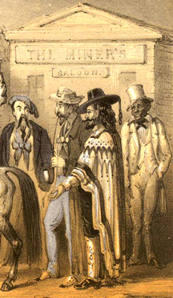

The 1850 census wasn't taken in Columbia until April 1851. One year after the discovery of Gold in Columbia and the settling of the town. The following lists show just the Mexican and South American populations in and around the town they called American Camp. For the purposes of this page, I have omitted references to all other ethnicities unless Mexicans are cohabitating with another ethnicity (which was the circumstance in many cases). However, it should be noted that the populations listed below represent about 1/4 of the total census data. As stated before, many folk who spoke Spanish were just called Mexican most of the time. The census was only 29 pages.
1851 April 24 - Census for Township 2 (Columbia) listing Mexicans and South Americans with professions. (many of the names were hard to read. I'm sure that the transcriber [A.W. Luckett] also misspelled many.)
PAGE 1
(Dwelling 635) Dwelling numbers differ in most cases from the Family numbers
Selvano Rio, male age 22 - Drover - line 1
Chris S. Munis male age 23 - Servant - L2
Senl Ruperto male age 30 - Servant - L3
Augusta Bartol male age 16 - Servant - L4
Joseph Dios male age 40 - miner - L5
(D636)
Hearia(?) Terbacis male age 23 Miner - L6
Louisa Redonda female age 28 born in California - L7
Marie Real female age 17 born in California - L8
Madeline Ignacio female age 18 - L9
(D637)
Matias Cacis male age 24 miner - L10
Huadalupe Frigo male age 65 - L11
Doloris Podils female age 19 - L12
Jurda Castilleno female age 2 - L13
(D638)
Josepha Quatera female age 28 - (living with four Frenchmen) L14
(D640)
Jean Ruis male age 28 miner - (living with a French family) L27
(D641)
Pepe Gonzalez male age 36 Miner - L28
M. Cartin male age 40 Miner from Spain - L29
S.A. Kallos female age 34 Opera singer - L30
S. Abballos female age 15 Ballet Dancer - L31
(D642)
Felippe Rosas male age 20 Miner - L34
G. Gongales male age 28 miner - L35
M. Ramares female age 35 - L36
M. Gonzalez female age 2 - L37
(D643)
S. Pollaria male age 26 butcher - L38
M.C. Mongares age 25 female - L39
Juan Rocas age 40 miner - L40
J. Bee Kico age 22 female - L41
G. Ennis age 25 female - L40
PAGE 3
(D620 with two white males living in same dwelling)
Jesus Florentus male age 15 miner - L10
Juan Jeroastes male age 20 miner - L11
Ignacio Bartolo male age 27 miner - L12
(D621 with five white males living in same dwelling)
Roman Alvarado male age 27 miner - L16
Tomas Alvarado male age 25 miner - L17
Jesus Alcardo male age 23 miner - L18
Romany Alcardo female age 18 - L19
Joagrin Roras male age 25 miner - L24
(D622)
Juan Gillia male age 22 Miner - L25
Jesus Tomaritto male age 25 Miner - L26
Ignacio Rins male age 27 Miner - L27
Tomas Rins male age 24 Miner - L28
PAGE 4
(D626 living with four white men and one Mexican born in California)
Jose Comos male age 35 miner - L2
(D627 living with three French men and one German)
Jesus Decnnia male age 25 miner from Brazil - L3
(D630 Living with four French men and one New Yorker)
Ignacio Ecalarde male age 28 Miner - L24
(D631 Living with two French men)
Marilla Mallionar female age 27 - L25
Nina Mallimda female age 7 - L26
(D633 Living with three French men)
J. Ningane male age 17 Clerk - L35
A. Carbetia male age 33 Miner - L36
Justo Martinus male age 26 Servant - L37
(D634)
Core Rodrigues female age 22 - L38
Estara Ballazan male age 39 miner - L39
Appolonia Qultenos female age 17 - L40
M. Halgalia female age 16 - L41
F. Ruis male age 25 - Hotel Keeper - L42
PAGE 5
(D634) continued
D. Garcia female age 35 - L1
(D672)
C. Feyereisen female age 20 - L2
M. Lalas male age 26 musician - L3
Loryies Lalas male age 28 musician - L4
(D673)
Geo. Garcia male age 30 - Merchant - L5
J. Foniais female age 25 - L6
La Remariez male age 30 miner - L7
N. Carbomle male age 22 miner - L8
J. J. Cammillo male age 25 - L9
(D674)
F. Guymas male age 26 Musician - L10
P. A. Castro male age 73 Musician - L11
D. Bernardes male age 22 Musician - L12
H. Bravo female age 17 - L13
(D675)
N. Miday female age 30 - L14
S. Contrara female age 40 - L15
S. Wartriar male age 38 miner - L16
L. Lopez male age 36 miner - L17
(D676)
P. Cruz male age 25 miner - L18
C. Lopez male age 30 miner - L19
R. Cruz male age 28 miner - L20
R. Gucon male age 26 miner - L21
J. Round male age 20 miner - L22
C. Urgins male age 40 miner - L23
(D677)
P. Diez male age 37 miner - L24
P. Berez male age 35 miner - L25
P. Gomez male age 34 miner - L26
F. Lanchoz male age 22 miner - L27
D. Cervantez male age 25 miner - L28
F. Romo male age 40 miner - L29
(D678)
J. Ralingnez male age 45 miner - L30
A. Ortiza male age 30 miner - L31
D. De La Bromer male age 57 miner - L32
S. Contiado male age 45 miner - L33
C. Algarader female age 15 - L34
M. Agarada female age 22 - L35
(D679)
F. Apachi male age 38 Physician - L36
Jom Tow male age 25 miner - L37
Meg Gorgaley female age 32 Merchant - L38
F. Ozedro male age 27 Merchant - L39
(D680)
M Rodringang male age 41 Merchant - L40
R. Lalmon male age 25 Merchant - L41
O. Aguilla male age 26 Baker - L42
PAGE 6
(D680) continued
Cruz Perez Male age 24 Tailor - L1
E. Coutez Male 35 miner - L2
Pable Jolazo Male 25 miner - L3
Louis Monaze Male 30 miner - L4
(D645)
J. Lopez Male age 20 miner - L5
Luz Azeatta Female age 26 - L6
Tomas Acosta Male age 30 miner - L7
F. Escobar male age 29 Carpenter - L8
V. Riela Male age 23 miner - L9
(D646)
B. Gallado Male age 24 miner - L10
Chapin Grazeivho female age 15 - L11
F. Caralera Male age 30 Miner from Chile - L12
A. Rojas Male age 20 Miner from Chile - L13
R. Donase Male age 40 Miner from Chile - L14
M. Briccua Male age 30 Miner from Chile - L15
(D647)
L. Sardiva Male age 22 Miner from Chile - L16
Antonio Gonzalez Male age 26 Miner from Chile - L17
G. Guiterrez Male age 37 miner - L18
C. Owoc Male age 30 miner - L19
(D648)
F. Orntrms Male age 28 miner - L20
Ignacio Bravo Male age 33 Miner from Chile - L21
A. Morna Male age 22 miner - L22
N. Yudus Male age 33 miner - L23
(D649)
F.M. Agvillar Male age 28 Miner - L24
Santo Gorzalez Male age 26 Tailor - L25
J. Ignacio Male age 18 Tailor - L26
T. Landoval Male age 40 Miner - L27
M. Zipado Male age 28 Miner - L28
(D650)
F. Allarey Male age 50 Miner - L29
Y. Narrarra Male age 26 Miner - L30
Lucas Carrolin Male age 25 Miner - L31
Francesca Hraina female age 18 - L32
(D651)
G. Perz Male age 30 shoemaker - L33
B. Cera Male age 40 blacksmith - L34
A. Blancotta Male age 28 blacksmith - L35
J.F. Rodrigues Male age 40 miner - L36
M. Refuzio Female age 28 miner - L37
(D652)
S. Corralles Female age 25 - L38
F. Nellben Female age 25 - L39
J. Morales Male age 45 miner - L40
A. Abilla Male age 35 miner - L41
P. Abilla Male age 10 - L42
PAGE 7
(D652) continued
J. Hermosillo male age 35 Miner - L1
(D653)
J. Abillo male age 35 Miner - L2
M. Banales male age 40 Jeweler - L3
M. Aldatta male age 48 Miner - L4
(D654)
A. Blance male age 38 Miner - L5
H. Contrada Female age 40 - L6
C. Contruda Female age 16 - L7
A. Marcario male age 16 Miner - L8
(D655)
P. Grivarro male age 18 Miner - L9
M. Darbilios male age 65 Miner - L10
F. Carrillo male age 40 Miner - L11
J. Regal male age 42 Miner - L12
S. Carsarco male age 44 Miner - L13
(D656)
Mriolas Rimas male age 30 Miner - L14
Jesus Lotto male age 35 Miner - L15
A. Ceorvja Female age 26 - L16
L. Nella Lenor male age 28 Miner - L17
C. Sanches male age 28 Miner - L18
(D657)
A. Lopez male age 26 Miner - L19
F. Gonzalez male age 15 Miner - L20
G. Robah Calan male age 29 Miner - L21
F. Rodrigues male age 28 Miner - L22
C. Cardinas male age 33 Miner - L23
(D658)
Pedro Javilla male age 35 Miner - L24
P. Sunal male age 25 Miner - L25
N. Feliz male age 20 Miner - L26
A. Guzman male age 20 Miner - L27
F. Morales male age 22 Miner - L28
(D659)
M. Rios male age 25 Miner - L29
C. Jons female age 23 - L30
M. Morales male age 1 infant - L31
L. Pachria male age 17 Miner - L32
P. Laviaza male age 10 Miner - L33
(D660)
F. Culderon male age 7 infant - L34
A. Calderon male age 3 infant - L35
E. Caupa male age 23 Miner - L36
R. Riverez male age 7 Miner - L37
M. Contiareg male age 22 Miner - L38
(D661)
J. Contrarez male age 23 Miner - L39
J. Usagura male age 40 Miner - L40
F. Rindone female age 38 - L41
T. Rindone female age 17 - L42
PAGE 8
(D661) continued
J. Carrabijel male age 20 Miner - L1
(D662)
V. Mosgen male age 22 Miner - L2
J. Macias male age 23 Miner - L3
J.M. Bylow male age 25 Miner - L4
M. Rodrigues male age 25 Miner - L5
(D6623)
F. Majarcs female age 14 (prostitute?) - L6
A. Reyes female age 30 (prostitute?) - L7
M. Ralingailla female age 28 (prostitute?) - L8
B. Padilla female age 23 (prostitute?) - L9
(D664)
V. Milandrez male age 50 Baker - L10
F. Raimezer male age 29 Miner - L11
Bima Dabela female age 20 (?) - L12
C. Lipe male age 25 Miner - L13
(D665)
M. Melendrez male age 14 Miner - L14
P. Lepe male age 4 infant - L15
J. Marias male age 39 from Pennsylvania, Miner - L16
La Guttimas male age 23 Miner - L17
(D666)
R. Torrez female age 18 (?) - L18
G. Regas male age 29 Miner - L19
Rosa Licia female age 18 (?) - L20
A. Ryer male age 36 Miner - L21
(D667)
S. Villa male age 23 Miner - L22
M. Marrila male age 21 Painter - L23
V. Villearz female age 37 (?) - L24
J. Mollaro male age 23 Miner - L25
Rosa Modrawo female age 18 (?) - L26
(D668)
Q. Cartilero female age 19 (?) - L27
C. Rodriguiz female age 18 (?) - L28
L.M. Gila female age 4 infant - L29
R. Gracilia male age 22 Miner - L30
M. Gurado male age 21 Miner - L31
(D669)
R. Herron male age 34 Miner - L32
J. Carrioner male age 4 infant - L33
V. Urlano male age 30 Miner - L34
S. Brincalo male age 40 Miner - L35
(D670)
M. Rios male age 25 Miner - L36
J. Gonzalez male age 18 Miner - L37
J. Moni male age 18 Saddler from Germany - L38
E. Martinez male age 45 Miner - L39
(D671)
R.Martinez male age 20 Miner - L40
E. Mendoza male age 33 Miner - L41
G. Luria male age 30 Musician - L42
PAGE 9
(D705)
V. Corralles male age 36 from Peru Miner - L1
J. Castillo male age 32 from Peru Miner - L2
P. Granidino male age 20 from Peru Miner - L3
R. Dies male age 20 from Peru Miner - L4
P. Lema male age 12 from Peru Miner - L5
Labrathe Viles male age 12 Miner - L6
(D706)
J. Arbin male age 24 Merchant - L7
F. Hernando male age 22 Clerk - L8
J.E. Quyedo male age 25 Miner - L9
E. Esqurbrla male age 25 tailor - L10
R. Camacho male age 24 tailor - L11
(D707)
C. Hermano male age 34 Miner - L12
F. Romandios male age 34 confectioner - L13
J. Romandins male age 13 confectioner - L14
P. Fountas male age 30 Miner - L15
M. Erpmiso male age 33 Miner - L16
(D708)
B. Bittran male age 26 Miner - L17
G. Burtamrti male age 25 Miner - L18
J. Guerrero male age 23 Miner - L19
G. Guerrero male age 26 Miner - L20
Jana Vernal male age 22 clerk - L21
(D709)
J. Owino female age 24 born in California (?) - L22
F. Quera female age 23 (?) - L23
P. Mirabel female age 28 (?) - L24
C. Padriguiz male age 20 Miner - L25
(D710)
B. Padriguiz male age 23 Miner - L26
P. Aginleor male age 33 Miner - L27
M. Navarro male age 28 Miner - L28
L. Morey male age 20 Miner - L29
A. Morey female age 30 (?) - L30
A. Cornllo female age 20 (?) - L31
(D711)
G. Lopez female age 14 (?) - L32
C. Lubas female age 29 (?) - L33
Juan Quartate male age 29 Miner - L34
C. Ramoz male age 40 Miner - L35
Ina Morey female age 25 (?) - L36
(D712)
A. Edourta female age 16 (?) - L37
M. Edourta male age 15 Miner - L38
D. Marta male age 19 Tailor - L39
M. Agnlem male age 26 Miner - L40
(D713)
A. Luzo male age 17 Miner - L41
J. Siloer female age 40 (?) - L42
PAGE 10
(D713)(continued)
A. Samgo female age 27 - L1
M. Grajillo female age 20 - L2
(D681)
Juan Florez male age 21 miner - L3
Leon Valla male age 31 miner - L4
L. Garcia female age 34 miner - L5
J. Contraro female age 25 (?) - L6
C. Rillizo female age 40 (?) - L7
F. Carnardez male age 35 miner - L8
C. Pandricus female age 40 (?) - L9
(D682)
P. Jarez male age 10 infant - L10
V. Jarez male age 40 miner - L11
G. Libeano male age 40 miner - L12
S. Tavella male age 30 miner - L13
P. Castrio female age 32 (?) - L14
(D683)
D Mendez female age 32 (?) - L15
F Corradello male age 25 miner - L16
G Simbrara female age 32 (?) - L17
J Simbrara female age 5 (?) - L18
G Ramirez female age 23 (?) - L19
(D684)
F Rodriguez female age 28 (?) - L20
C Espinosa female age 35 (?) - L21
J Camillo female age 19 (?) - L22
G. Zeralla female age 33 (?) - L23
G. Lopez male age 30 miner - L24
(D685)
B. Herre male age 18 miner - L25
A. Corales male age 32 miner - L26
R. Robles male age 18 miner - L27
A. Plumer male age 35 miner - L28
(D686)
A. Plumer male age 19 miner - L29
P. Sanabrias male age 35 miner - L30
Flelle Monta female age 23 (?) - L31
M. Asallos male age 30 miner - L32
B. Torres male age 27 miner - L33
(D687)
D. Arrachazo male age 25 miner - L34
D. Chessey male age 24 from France miner - L35
J. Ida Tuor female age 33 miner - L36
P. Margus male age 24 miner - L37
(D688)
F. Morales male age 19 miner - L38
W. Lorbaroze male age 28 miner - L39
J. M. Maria male age 25 miner - L40
G. Florio male age 27 miner - L41
J. M. Vidos male age 29 miner - L42
PAGE 11
(D688)(continued)
A
R. Roblas male age 32 miner - L1
(D689)(boarding house with mostly French)
E. Lopes male age 21 miner - L2
J. Lope female age 45 from France (?) - L3
J. Dilastro female age 17 from France (?) - L4
J. Bartol male age 45 from France miner - L5
J. Robbert female age 40 from France (?) - L6
A. Robbert male age 11 from France miner - L7
A. O. Robbert male age 12 from France miner - L8
L. Robbert male age 8 from France miner - L9
J. Robbert female age 3 from France infant - L10
F. Oleida 32 miner - L11
(D690)
B. Castro male age 37 miner - L12
F. Grurro male age 22 miner - L13
F. Cortez male age 52 miner - L14
R. Ribas female age 28 (?) - L15
J. Carnlelia female age 24 (?) - L16
R. Carnlelia male age 17 miner - L17
(D692)
Lantas Roagair male age 24 miner - L18
S. Ammarillos male age 25 miner - L19
J. Sombrado female age 20 (?) - L20
G.. Gonzalez male age 22 miner - L21
P Ibarra male age 30 miner - L23
S. M. Preciado male age 29 miner - L24
(D693)
E. Moodo male age 30 miner - L25
J. Page female age 30 (?) - L26
F. Mendons female age 29 (?) - L27
M. Rosas male age 29 miner - L28
D. Paraein female age 25 (?) - L29
(D694)
A. Dorgorges male age 29 miner - L30
R. Fontya male age 25 miner - L31
R. Arrusra male age 20 (?) - L32
F. Montyo female age 40 (?) - L33
Jo Mantyo male age 20 miner - L34
(D695)
M. Lalas female age 34 from France (?) - L35
Nuholas Jalas male age 31 from France miner - L36
Ja Chollar male age 49 miner - L37
J A Chollas female age 45 (?) - L38
Jobe Chollas male age 19 miner - L39
Leon Parges male age 23 miner - L40
(D696)
A. Parizo male age 15 miner - L41
S. S. Planel male age 41 from France miner - L42
J. Planel female age 26 from France (?) - L43
PAGE 12
(D696)(continued)
Cruz Ormaz male age 26 Miner - L1
(D697)
G. Armaz make age 30 Miner - L2
H. Hernandez male age 32 drover - L3
N. Calderone male age 35 drover - L4
F. Lalis male age 28 Miner - L5
S. Cassaris female age 25 (?) - L6
(D698)
T. Mitchell male age 6 infant - L7
J. Digado male age 17 28 Miner - L5
A. Caldrone female age 21 Laundress - L9
A. Deldado male age 4/12 infant - L10
C. Leone male age 26 Miner - L11
J. M. Belmore male age 30 Miner - L12
(D699)
F. Yanez male age 25 miner - L13
R. Villare female age 22 Laundress - L14
J relle Senor male age 16 miner - L15
Juda Lopez male age 41 miner - L16
P. Vedra male age 35 miner - L17
(D700)
J. Vedra female age 38 (?) - L18
A. Vedra female age 3 infant - L19
A. Ruis male age 24 butcher - L20
M. Uribe male age 26 butcher - L21
R. Pintado male age 21 tailor - L22
D. Laredo male age 35 Mariachi(?) - L23
(D701)
B.Yarro male age 33 (can't read) - L24
E. Conchas male age 18 (can't read) - L25
Ramon Corace male age 28 miner - L26
Lore Bravo born in Chile male age 22 miner - L27
J. Milas born in Peru male age 40 miner - L28
J. Livalros born in Peru male age 40 miner - L29
(D702)
A. Dabilla born in Peru male age 35 miner - L30
F. Garidine born in Peru male age 36 miner - L31
Juan Luner born in Peru male age 40 miner - L32
J. Viles born in Peru male age 18 miner - L33
J. Leda born in Peru male age 30 miner - L34
J. Bargas born in Peru male age 28 miner - L35
(D703)
N. Corales born in Bolivia male age 50 miner - L35
. Lopez born in Peru male age 48 miner - L35
Louis Ruis born in Peru male age 36 miner - L35r>
A. Pins born in Peru male age 38 miner - L35
(D704)
R. Mindibaba born in Peru male age 26 miner - L35
J. Minababa born in Peru male age 32 miner - L35
A. Hernandez born in Peru male age 36 miner - L35
PAGE 14
(D820)(boarding with 6 Anglos)
P. Vallejo male age 25 miner - L26
PAGE 15
(D824)(boarding with 4 Anglos)
Antonio Lopes male age 35 miner - L9
(D825)
Jusalia Armnia male age 33 miner - L11
Santiazo Wattaror born in France male age 35 miner - L12
Francisco Lana 30 miner - L13
Jose Ma Gonzales 48 miner - L14
Jesus Acosta male age 40 miner - L15
Marahilda Acosta 25 miner - L16
(D826)
Pedro Gordvis born in Chile male age 45 miner - L17
Jesus Lopes male age 27 abt 1823 miner - L18
Ignacio Gordio born in Chile male age 40 miner - L19
Andrew Gahringer born in Germany male age 27 farmer - L20
PAGE 16
(D831)(boarding with 3 Anglos from page 15)
Jesus Alvara male age 26 miner - L1
(D834)(boarding with 3 Anglos)
Fanster Ramsero male age 25 miner - L6
Jose Maria male age 50 miner - L7
PAGE 20
(D870)(boarding with 5 Anglos)
Imarnacion Laleya male age 16 Miner - L20
PAGE 21
(D1086)(boarding with 4 Anglos)
Francisco Rivardo male age 20 Miner - L37
(D1087)(boarding with 1 Anglos)
Ocambo Escatanta male age 22 Miner - L41
Fernande Escatanta male age 12 Miner - L42
PAGE 22
(D1087)(continued)
Browho Escatanta male age 14 Miner - L1
(D1061)(boarding with 5 Anglos)
Eduardo Rodergas male age 26 Miner - L2
Manuel Cordo male age 26 Miner - L7
Jose Rivara male age 40 Miner - L9
(D1062)(boarding with 5 Anglos)
Pedro Manunas male age 25 miner - L10
Jose Jocinte Cordova male age 25 miner - L15
Jose Marin Roderigues male age 23 miner - L16
(D1063)(boarding with 3 Anglos)
Francisco Roderigues male age 23 miner - L20
Manuel Bohander male age 20 miner - L21
Jose Marin Escalante male age 22 miner - L22
Francisco Escalante male age 43 miner - L23
Victorana Lopez male age 35 miner - L24
(D1064)(boarding with 8 Anglos)
Francisco Baldes male age 34 miner - L32
(D1066)(boarding with 3 Anglos)
Ignacio Rohus male age 30 miner - L42
PAGE 23
(D1066)(boarding with 3 Anglos - continued)
Ignacio Morano male age 40 miner - L1
(D1067)(boarding with 4 Anglos)
Antonio Sancho born in Peru male age 41 miner - L6
Jose Bialas born in Chile male age 24 miner - L7
(D1068)(boarding with 1 Anglo)
Antonio Perris male age 25 miner - L8
Antonio Cannas male age 40 miner - L9
Manuel Manheim born in Peru male age 24 miner - L10
Ignacio Ramon male age 45 miner - L11
Jose Wentas male age 33 miner - L12
(D1069)(boarding with 1 Anglo)
Juan M. Estavan born in Peru male age 16 miner - L15
Tomaso Roman male age 19 miner - L16
Delois Sarrnis male age 16 miner - L17
Jose Bustamante male age 30 miner - L18
Antonio Losano male age 20 miner - L19
(D1070)(boarding with 1 Anglo)
Daniel Jose male age 40 miner - L20
Juan M Sacramento male age 18 miner - L21
Jose M Boorcal male age 28 miner - L23
Frankaline Bravo male age 26 miner - L24
Gualoupe Romaro male age 16 miner - L25
Elazo Elelabro male age 62 miner - L26
(D1071)(boarding with 1 Anglo)
Antonio Menn male age 29 miner - L27
Gualoupe Hazo male age 30 miner - L28
Francisco Trivise male age 8 miner - L29
Theodoro Marting male age 22 miner - L30
Jose Maluse male age 39 miner - L32
(D1072)(boarding with 6 Anglos)
Felippe Orosco male age 25 miner - L35
(D1073)(boarding with 3 Anglos)
Moraste Hario male age 25 miner - L42
PAGE 25
(D1116)(boarding with 4 Anglos)
Dios Dionicio male age 22 blacksmith - L5
(D1117)
Ramon Caradro male age 31 miner - L6
Refugio Perez female age 24 (?) L7
(D1121)(boarding with 8 Anglos)
Mathew (no last name) male age 27 miner - L34
PAGE 26
(D1330)(boarding with 2 Anglos)
Jos Brown male age 80 miner - L3
Florencia Tosen male age 35 miner - L4
Aculan Arocha male age 23 miner - L5
Augustin Aromis male age 32 miner - L6
(D1355)
>br>Castro Pirtas male age 25 miner - L10
A. Morales male age 22 miner - L11
E. Mahares male age 19 miner - L12
Mazel Obluns male age 30 miner - L13
(D1356)(boarding with 2 Anglos)
Manuel Alvares male age 23 miner - L14
Emmerjilla Ramares male age 22 miner - L15
Rosacio Corasco male age 18 miner - L16
Euacir Peratto male age 23 abt 1827 miner - L17
Manuel Kietuna male age 20 abt 1830 miner - L18
Sept Jucon male age 25 abt 1825 miner - L19
Juan Lopez male age 27 abt 1823 miner - L20
Pedro Roco male age male age 31 miner - L21
Evacio Parall male age 42 miner - L24
Ramon Equilla male age 37 miner - L25
Calito Romano male age 16 miner - L26
Jose La Cruz male age 25 miner - L27
(D1357)(boarding with 4 Anglos)
Evacir Pesalto male age 22 miner - L28
Mateo Ortis male age 30 miner - L29
Uomsis Estrai male age 17 miner - L35
Jucarnacior Estrai male age 9 miner - L36
Esedro Estrai male age 14 miner - L37
(D1358)(boarding with 2 Anglos)
F. Morales male age 18 miner - L38
Incarnacior Estrai male age 40 miner - L39
Juan Antonio male age 26 miner - L40
PAGE 27
(D1358)(boarding with 2 Anglos - continued)
Magerina Chaturnia male age 30 miner - L1
Vinanta Moutaves male age 30 miner - L2
(D1359)
Antonia Figura female age 32 (?) - L3
Jose Maturza male age 30 miner - L4
Guadalupe Ulles female age 32 (?) - L5
Ambrosia Durana male age 50 miner - L6
Felipp Gutierres female age 16 miner - L7
Juan Penoria male age 32 miner - L8
(D1360)(boarding with 1 Anglo)
Mariana Obicold female age 21 (?) - L9
Renyner Muicles male age 32 miner - L10
(D1364)(boarding with 5 Anglos)
Juan Julian male age 35 miner - L37
Juan Martina black(mix) male age 22 miner - L41
PAGE 28
(D1366)(boarding with 9 Anglos)
John Lonchey male age 20 miner - L13
Martina Buelna male age 35 miner - L14
(D1367)(boarding with 10 Anglos)
A Cain male age 26 abt 1824 miner - L23
Trehern Muos male age 32 abt 1818 miner - L24
PAGE 29
(D1350)(boarding with 7 Anglos and 2 Philipinos)
Lorenzo Outwira male age 19 miner - L14
Pedro Tafia male age 30 miner - L15
(D1351)(boarding with 8 Anglos)
Canpin Ramarez male age 23 miner - L18
Jose Magele male age 35 miner - L19
W Morago male age 21 miner - L20
(D1352)(boarding with 4 Anglos)
Levi D Cunin born Brazil male age 25 miner - L33
Jose Parez male age 23 miner - L34
Jose Carnes male age 35 miner - L35
Evacio Anias male age 31 miner - L36
Evacio Romero male age 30 miner - L37
Juan Jose male age 30 miner - L38
Jose Paticio male age 30 miner - L39
(D1353)(boarding with 2 Anglos)
Juan Moje male age 25 miner - L40
End of 1850 census finished May 17 1851
1860 June 29 through August 24 - The Columbia census for Township 2 (Columbia) which was 156 pages shows the following lists of Mexicans, & South Americans listed as prostitutes.
(see listings below)
Manilla DeSoto, 28 yr old from Mexico. worth $200.(Page 46-Line 13)
Martina Barton, 40 yr old from New Granada. (P52-L23)
Rosa Navado, 30 yr old from Chile. (P52-L34)(Four children in household)
Joana Pimento, 24 yr old from New Granada.(P52-L39)
Josephina Pimento, 30 yr old from New Granada.(P52-L40)
Louise Arams, 17 yr old from New Granada(Colombia).(P53-L1)
Mercedes Gonzales, 25 yr old from Chile.(P53-L2)
Carmetta Regetta, 24 yr old from Chile.(P53-L5)
Mary Salinas, 24 yr old from Mexico.(P53-L23)
Mary Sevin, 24 yr old from Chile.(P66-L38)
Rosalia Garcia, 16 yr old from Mexico.(P69-L35)
Hannah Piemonte, 26 yr old New Granada.(P71-L16)
Mary Palos, 26 yr old from Mexico, worth $1000.(P77-L1)
1860 June 29 through August 24 - The Columbia census for Township 2 (Columbia) which was 156 pages shows the following lists of Mexicans & South Americans. It may be asumed that a child born of these parents in California were born in Columbia area.
PAGE 45
(D2217)Dwelling numbers differ in most cases from the Family numbers
Francis Laronde born in France male age 40 Miner - L13
Dominga Laronde born in Mexico female age 42 wife - L14
Mary Laronde born in California female age 7 infant - L15
Johnita Laronde born in California female age 5 infant - L16
PAGE 46
(D2233)
Manilla Desoto female age 28 Prostitute worth $500 - L13
Adaliade Debrat female age 11 (woman's children?) - L14
Virginia Debrat female age 7 (woman's children?) - L15
Walter Moon male age 5 (woman's children?) - L16
Michael Moon male age 4 (woman's children?) - L17
(D2234)
Domingo Oliver born in California male age 26 butcher worth $750 - L25
Maria Oliver female age 17 (?) - L26
Manwell Oliver male age 1 infant - L27
Dolores Morine female age 17 servant - L28
PAGE 52
(D2334)
Margreta Mascoso born in Chile female age 30 seamstress - L5
Mary Ramos born in Chile female age 30 seamstress - L6
William Ramos born in Calif. male age 3 infant - L7
George Ramos born in Calif. male age 1 infant - L8
Frank Moscoso born in Calif. male age 5 infant - L9
Mary Moscoso born in Calif. female age 3 infant - L10
(D2341)
A. Borilla born in Switzerland male age 32 Saloon keeper worth $1000 - L20
Angela Borilla born in Mexico female age 26 (wife?) - L21
(D2349)
Josfa Rojas born in Chile female age 30 Saloon keeper worth $700 - L32
Willie Minor born in Jamaica female age 28 Barkeeper - L33
(D2350)
Rosa Navado born in Chile female age 30 Prostitute - L34
Angela Navado born in California female age 7 infant - L35
Florance Navado born in California female age 4 infant - L36
Benjamin Navado born in California male age 1 infant - L37
William Navado born in California male age 3/12 infant - L38
(D2351)
Joana Pimento born in New Granada female age 24 Prostitute - L39
Josepha Pimente born in New Granada female age 30 Prostitute worth $500 - L40
PAGE 53
(D2352)
Louise Arams born in New Granada female age 17 Prostitute - L1
Mercedes Gonzales born in Chile female age 25 Prostitute - L2
Josephine Gonzales born in California female age 7 infant - L3
Philip Gonzales born in California male age 3/12 infant - L4
(D2353)
Carmetta Regetta born in Chile female age 24 Prostitute - L5
(D2361)
Joaguin Ricardo born in Buenos Aires male age 39 miner worth $1000 - L15
Manuella Ricardo born in Bolivia female age 37 saloon keeper - L16
Theodora Ricardo born in California female age 8 infant - L17
Julian Ricardo born in California male age 5 infant - L18
(D2365)
Mary Salinas born in Mexico female age 24 Prostitute - L23
Mary Torios born in Spain female age 28 Prostitute - L24
PAGE 54
(D2380)
John Tablio male age 30 miner - L13
PAGE 66
(D2642)
Mary Sevin born in Chile female age 24 Prostitute - L38
PAGE 69
(D2679)
A. Sanchez male age 35 Saloon Keeper worth $100 - L15
Maria Sanchez female age 35 Saloon Keeper - L16
Theoraon Teres male age 25 cook - L17
(D2682)
R. Roderigues male age 40 miner - L25
Lopaz Roderigues female age 37 washerwoman - L26
Maria Roderigues female age 7 infant - L27
Coratano Roderigues male age 3 infant - L28
Larato Sabro male age 34 Irones(?) - L29
(D2683)
Jose Castro male age 26 silversmith worth $300 - L30
Mercede Castro female age 34 Dressmaker - L31
Jesus Goteres male age 38 miner - L32
(D2684)
Jose Hernandez male age 40 miner - L33
Mariana Hernandez female age 35 Bar keeper - L34
Rosalia Garcia female age 16 Prostitute - L35
(D2685)
Joaguin Morano male age 32 miner - L36
Jose Ramos male age 30 miner - L37
John Hernandez male age 32 miner - L38
(D2686)
Ivaghier Hernandez male age 27 miner - L39
Josephina Hernandez female age 30 wife - L40
PAGE 70
(D2693)
John Smith male age 25 Canadian J. Bricklayer - L15
Jerome Argosa male age 27 miner - L16
Castro Ruizogo male age 28 Miner - L17
PAGE 71
(D2711)
Hannah Piemonte female age 26 born in New Grenada. Prostitute - L16
Marka Piemonte female age 10 born in New Grenada. infant - L17
Pimenta Piemonte female age 5 born in California. infant - L18
PAGE 72
(D2724)
Joanna Guageho female age 36 washwoman worth $600 - L11
Guy Guageho male age 5 infant - L12
Luna Guageho female age 4 infant - L13
Darel Guageho male age 2 infant - L14
PAGE 77
(D2819)
Mary Palos born in Mexico female age 26 Prostitute worth $1000 - L1
(TO BE CONTINUED)